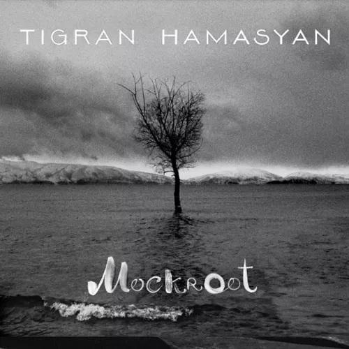

DISCOGRAPHY

An Ancient Observer
An Ancient Observer is the 8th album by Tigran Hamasyan released 31 March 2017. Two of the tracks on the album are developments of traditional Armenian melodies and all tracks have influences from Armenian folk music.

Mockroot
Mockroot is the sixth album by Tigran Hamasyan, released 17 February 2015. The album mixes traditional Armenian folk music (and other styles such as Rock and Minimalism) with jazz, in the jazz fusion style.

A Fable
A Fable is the fourth album by Tigran Hamasyan released in February 2011. Tigran uses traditional Armenian hymns, Armenian poetry and Armenian folk music as the basis for the tracks on the album.